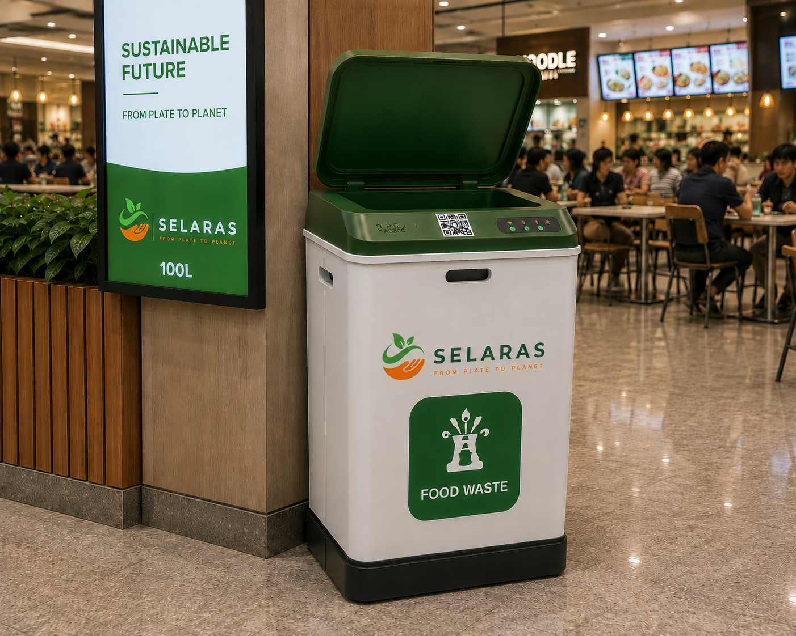

SELARAS mengubah limbah makanan sektor pariwisata menjadi sumber daya ekonomi melalui ekosistem digital berbasis IoT — menghubungkan penghasil limbah, pengelola, dan pembeli dalam satu platform terintegrasi.

Rata-rata pengurangan biaya operasional pada pilot project kami.
Platform digital terintegrasi yang mengubah food waste dari beban menjadi sumber daya ekonomi bernilai tinggi.
Sensor IoT otomatis mendeteksi kapasitas limbah dan mengirim notifikasi real-time kepada pengelola limbah.
Dashboard monitoring terpusat untuk penghasil limbah, pengelola, dan pembeli produk hasil olahan limbah.
Marketplace digital untuk memasarkan kompos, maggot BSF, eco enzyme, dan produk organik hasil olahan limbah.
Generate laporan keberlanjutan selaras GRI, SASB, dan CDP untuk kepatuhan korporasi dan pemerintahan.
Pantau setiap smart bin dari satu dashboard terpusat dengan analitik langsung dan wawasan prediktif.
Pantau tingkat pengisian limbah di seluruh fasilitas secara real-time menggunakan sensor IoT terhubung cloud.
Terima pemberitahuan instan ketika smart bin hampir penuh atau memerlukan perhatian dari tim pengelola.
Analisis performa pengangkutan, dampak lingkungan, dan efisiensi operasional jangka panjang berbasis data.
Spesifikasi hardware dan konektivitas lengkap untuk keperluan pengadaan dan perencanaan integrasi sistem.
Tiga varian kapasitas yang disesuaikan dengan skala produksi food waste di berbagai jenis fasilitas pariwisata.

Ideal untuk kafe kecil, warung makan, dan stasiun pemilahan food waste indoor dengan volume limbah rendah.
 Paling Populer
Paling Populer
Solusi seimbang untuk food court, sekolah, restoran menengah, dan fasilitas yang membutuhkan keandalan tinggi.

Untuk hotel, buffet, katering besar, dan kawasan wisata dengan volume produksi food waste tinggi.
Hardware dan software yang dirancang untuk mengoptimalkan efisiensi pengumpulan dan pelaporan keberlanjutan.

Sensor ultrasonik secara terus-menerus memantau tingkat limbah dan menyinkronkan data langsung ke dashboard cloud — dengan presisi ±2 cm.

Sistem secara otomatis mengirim peringatan ke aplikasi mobile, email, dan WhatsApp ketika bin mendekati kapasitas penuh, medeteksi anomali berat, atau mengalami gangguan koneksi — sehingga tim pengelola dapat merespons sebelum masalah terjadi.

Data historis pengumpulan membantu mengoptimalkan rute pengangkutan dan mengurangi inefisiensi operasional sebelum terjadi.

Generate metrik keberlanjutan dan laporan dampak lingkungan secara otomatis sesuai standar GRI, SASB, dan CDP.
Modernisasi pengelolaan food waste menggunakan monitoring IoT, analitik operasional, dan kecerdasan keberlanjutan. Bergabunglah bersama ratusan fasilitas wisata yang telah bertransformasi.